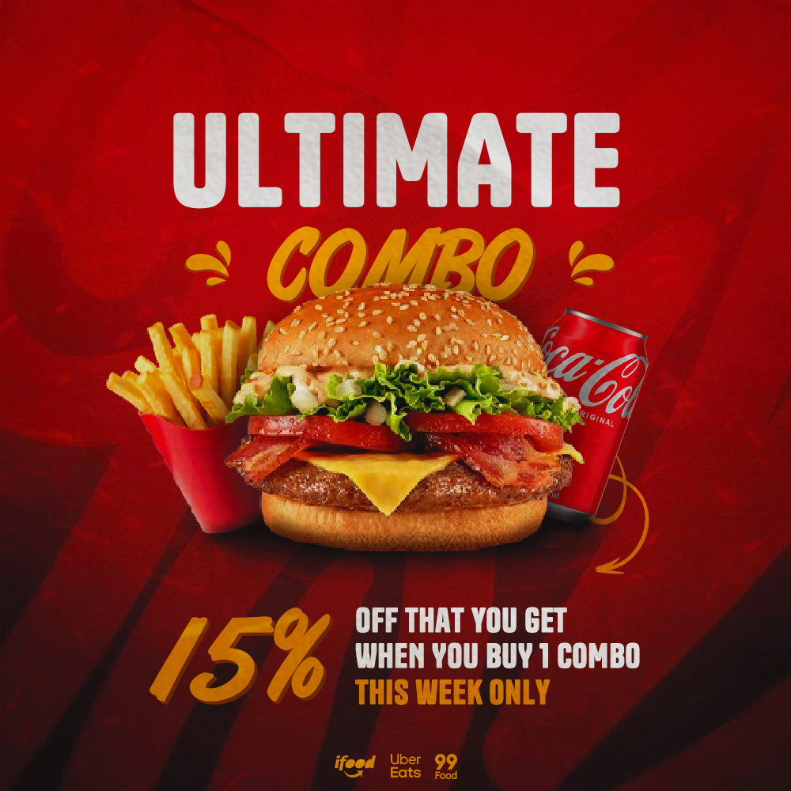

Fast Food Graphic Design – Professional Designs for Restaurants
If you are looking for a fast-food graphic designer, I am offering my services as a professional designer specialized in creating high-converting visuals for restaurants and snack bars. I develop custom designs for burgers, combos, drinks, and promotions, helping your business attract more customers and increase sales through strategic and eye-catching visuals.

In the fast-food industry, presentation is everything. Before customers taste your food, they see your brand online. A professional design makes your products look more appealing, builds trust, and encourages people to place an order. Whether you run a burger shop, sandwich place, or delivery business, strong visual communication can set you apart from competitors.
Fast-Food Designs for Social Media
Social media platforms like Instagram and Facebook are essential for promoting fast-food businesses. I create designs optimized for these platforms, ensuring your posts look professional and stand out in crowded feeds.
From combo promotions to daily deals, every design is crafted to highlight your products clearly and attractively. A well-designed post increases engagement, improves visibility, and helps turn viewers into customers.
Promotions and Combo Deals
Combo deals are one of the most effective ways to boost sales in fast-food businesses. I design promotional graphics that clearly present offers such as burger + fries + drink combos, discounts, and limited-time deals.
The goal is to make your promotion easy to understand and visually irresistible. With the right layout, colors, and typography, your offers become more appealing and drive more conversions.
Custom Designs for Restaurants
Every fast-food brand has its own identity, and your design should reflect that. I create custom visuals tailored to your brand style, colors, and target audience.
Whether your brand is modern, bold, or minimal, I ensure your visuals stay consistent and professional across all platforms. This consistency helps build recognition and trust with your audience.
Logo Vectorization
I also offer logo vectorization services, converting low-quality images into high-resolution vector files. This ensures your logo can be used in any size without losing quality.
Vector files are essential for printing, packaging, uniforms, and digital use. A clean and professional logo strengthens your brand identity and improves overall presentation.
Business Card Design
A professional business card is a powerful tool for any fast-food business, especially for delivery services and local promotion. I design clean and modern business cards that present your contact information clearly and professionally.
This helps customers remember your brand and makes it easier for them to contact or reorder from your business.
Types of Fast-Food Designs
- Combo promotions
- Burger advertisements
- Drink and dessert promotions
- Social media posts
- Flyers and banners
- Delivery promotions
Design Process
1. Information Gathering
You provide details such as menu items, prices, combos, logo, and references if available.
2. Visual Planning
I organize the layout to highlight the most important information clearly and strategically.
3. Design Creation
I create a custom design focused on visual impact, readability, and customer attraction.
4. Revisions and Delivery
After your feedback, I make final adjustments and deliver the design ready for use on social media or print.
FAQ
Do you create designs for any type of fast-food business?
Yes. I work with burger shops, snack bars, delivery services, and all types of fast-food businesses.
Are the designs optimized for social media?
Yes. All designs are created in the correct formats for platforms like Instagram and Facebook.
Can I include multiple products in one design?
Yes. I can organize multiple items and combos in a clean and attractive layout.
What do I need to get started?
You need to provide menu items, prices, logo, and any references if available.
Do you offer logo vectorization?
Yes. I can convert your logo into a high-quality vector file for professional use.
Does professional design really increase sales?
Yes. High-quality visuals attract more attention, increase engagement, and influence customer decisions.
Request Your Fast-Food Design
If you want to grow your fast-food business with professional and attractive designs, get in touch now and request your custom project.